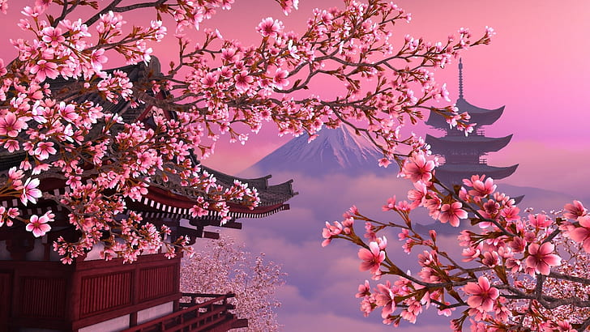

Miért különleges Japán?
Japán egyedülálló ország, ahol a modern technológia és az ősi hagyományok kéz a kézben járnak. A cseresznyevirágzás, a lenyűgöző hegyvidékek és a vibráló nagyvárosok mind hozzájárulnak ahhoz, hogy Japán az egyik legérdekesebb úti cél a világon. Ez az ország egyszerre őrzi a szamurájok becsületkódexét, a cseresznyevirágzás ünnepét és a teaszertartásokat, miközben világelső a robotikában, vonatközlekedésben és digitális innovációban. Egyedi kultúrája, sajátos írásrendszere, gasztronómiája - mint például a sushi vagy ramen - és az emberek udvariassága mind hozzájárulnak ahhoz, hogy Japán más, mint a világ bármely más pontja. Ez a különleges kettősség teszi Japánt felejthetetlen élménnyé az odalátogatók számára.
Tokió látképe

Tokió látképe lenyűgözően ötvözi a modern városkép és a hagyományos japán elemek világát: a felhőkarcolók és neonfényes utcák között régi szentélyek és csendes kertek bújnak meg. A város horizontját meghatározza a futurisztikus Tokyo Skytree, míg a háttérben, tiszta időben, gyakran feltűnik a távoli Fudzsi-hegy sziluettje. Az éjjel kivilágított Shibuya átkelőhely, a világ egyik legforgalmasabb gyalogoskereszteződése, szimbolikusan mutatja be Tokió lüktető, modern életét. Mindezek mellett Tokió megőrzi tradicionális arculatát is, például az Asakusa negyedben, ahol a Senso-ji templom és a hagyományos üzletek a régi Japánt idézik meg. A város látképe így egyszerre nyújt vizuális izgalmat és kulturális mélységet.
Cseresznyevirágzás
A tavaszi cseresznyevirágzás, japánul „szakura”, Japán egyik legszebb és legjellegzetesebb természeti eseménye, amely nemcsak a tájat varázsolja rózsaszínné, hanem mély kulturális jelentéssel is bír. Március végétől április elejéig az ország különböző részein virágba borulnak a cseresznyefák, és ilyenkor családok, barátok, sőt kollégák is összegyűlnek a parkokban piknikezni és gyönyörködni a virágzás szépségében - ezt az eseményt hívják „hanami”-nak. A cseresznyevirágzás mulandósága a japán kultúrában az élet rövidségét és szépségét szimbolizálja, ezért is övezi különleges tisztelet ezt az időszakot. A látványos virágözön mellett a városok és falvak különböző ünnepségekkel, lampionokkal díszített sétányokkal és tradicionális ételekkel is ünneplik a tavasz érkezését.
Fuji-hegy
A Fudzsi-hegy (Fuji-san) Japán legismertebb és legmagasabb hegye, egy ikonikus, tökéletes kúp alakú vulkán, amely spirituális és kulturális jelentőséggel is bír. A 3776 méter magas hegy Tokiótól délre, Honshu szigetén emelkedik, és tiszta időben messziről is jól látható. A Fudzsi nemcsak a természet kedvelőinek és hegymászóknak népszerű célpontja, hanem évszázadok óta inspirálja a művészeket, költőket és zarándokokat is - számos festményen, fametszeten és versben megjelenik, mint a japán szépség és nyugalom jelképe. A nyári mászószezon alatt több tízezren vágnak neki a hegynek, hogy napfelkeltét nézzenek a csúcsról, amit a japánok "Goraikō"-nak neveznek. A Fudzsi-hegy így nemcsak természeti csoda, hanem mélyen gyökerező szimbóluma is Japán nemzeti identitásának.